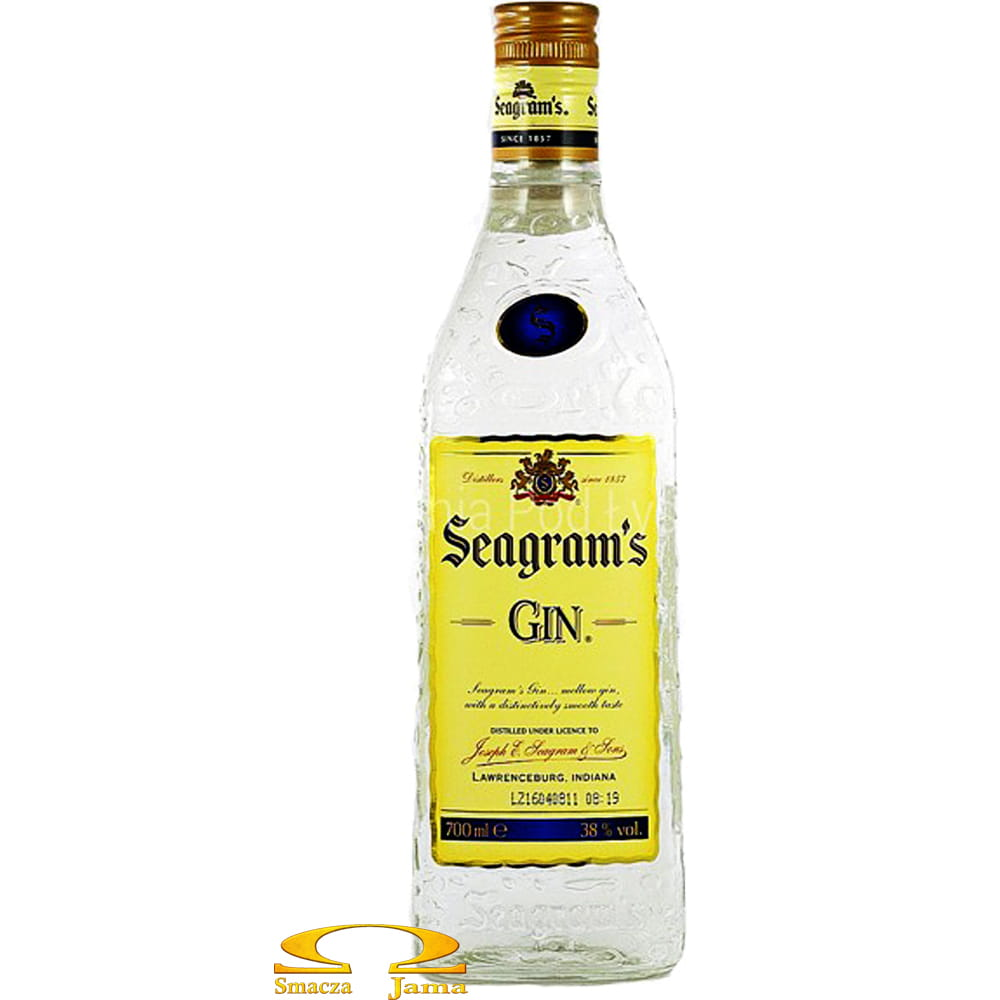

Jestes GINEM

Wiele mozna powiedziec o ginie dobrego
Gin z cytryna, czy z tonikiem jest bardzo klasyczny, orzezwiajacy
Niestety trzeba to powiedziec, ze jest raczej gorzki, dlatego ludzie go czasem unikaja
Jestes pewny siebie i swoich mocnych stron, kierujesz sie rozwaga i zastanawiasz sie zanim cos zrobic
Jednak ludziom mozesz wydawac sie czasem oschly, zimny, bez poczucia humoru
Pamietaj o tym, zeby od czasu do czasu sie usmiechnac do innych
A poza tym pielegnuj swoje dobre cechy bo masz ich sporo!